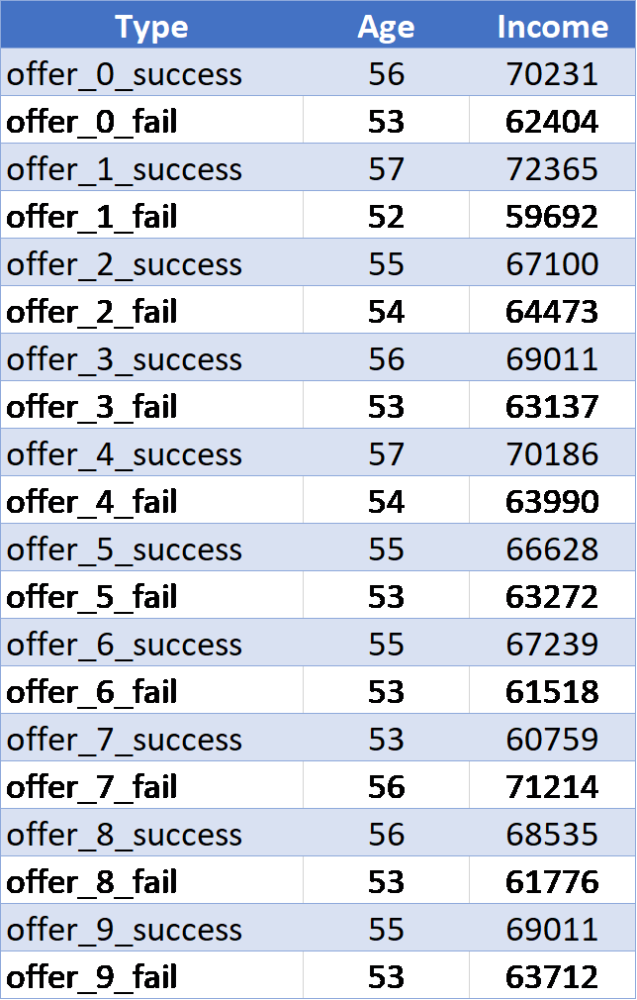

Starbucks Udacity Capstone Project
Project Overview
This project is part of the Udacity Data Scientist Nanodegree. Starbucks is interested to study previous marketing offers and their impact on different types of customers in order to better direct their marketing strategies. The dataset used in this project contains simulated data that mimics customer behaviour on the Starbucks rewards mobile app. Once every few days, Starbucks sends out an offer to users of the mobile app. An offer can be merely an advertisement for a drink or an actual offer such as a discount or BOGO (buy one get one free).
Some users might not receive any offer during certain weeks. Not all users receive the same offer, and that is the challenge to solve with this data set.
The data is contained in three files:
portfolio.json - containing offer ids and meta data about each offer (duration, type, etc.)
profile.json - demographic data for each customer
transcript.json - records for transactions, offers received, offers viewed, and offers completed
Problem Statement
People respond to offers differently and it’s important to distinguish between different types of people to make the most out of the platform. Some get annoyed from constantly receiving notifications for something they’re not interested in which might in result affect customer satisfaction. In this project, I will study the factors affecting the customer choice on whether to respond to an offer or not and build a machine learning model to predict the customer’s response. I am not a coffee fan but I’m assuming age and income will be important factors. On the other hand, I don’t believe gender will have an impact on the prediction
Metrics
The distribution of different groups might be unbalanced which would result in biased conclusions. Therefore, to avoid this problem from the start, I will use both accuracy, F1-score to measure the performance of the models.
Analysis
Data Exploration and Visualisation
Starting with portfolio.json, there are 6 features describing offers:
- channels (list of strings) – means of marketing
- difficulty (int) - minimum required spend to complete an offer
- duration (int) - time for offer to be open, in days
- id (string) - offer id
- offer_type (string) - type of offer ie BOGO, discount, informational
- reward (int) - reward given for completing an offer

Observations:
We have 10 different offers in our dataset and they are communicated through several communication platforms: web, email, mobile and social. These features describing offers will be important for creating our machine learning model later so it’s important to clean them and transform them into the correct format. There are two main things to do here:
- create 4 columns from the ‘channels’ column for each value as one hot encoding
- one hot encoding for ‘offer_type’ column
profile.json, 5 variables containing demographic data for customers
- age (int) - age of the customer
- became_member_on (int) - date when customer created an app account
- gender (str) - gender of the customer (note some entries contain 'O' for other rather than M or F)
- id (str) - customer id
- income (float) - customer's income

We have a total of 17000 customers in this dataset and here are some brief statistics about the data:

Observations:
- Around 12.8% of the values in Profile dataset are missing at 2175 records where age=118, gender=None & income=NaN
- Approximately 1.4% of the customers chose 'O' which is a shortcut of Others that are not female of male
- The number of male customers are 16% higher than the female cutomers
- 0/1 encoding should be performed on gender column
- ‘became_member_on’ column should be re transformed to a better format to take advantage of this column later for modelling
transcript.json
- event (str) - record description (ie transaction, offer received, offer viewed & offer completed)
- person (str) - customer id
- time (int) - time in hours since start of test. The data begins at time t=0
- value - (dict of strings) - either an offer id or transaction amount depending on the record
Event column distribution:

Observations:
- There are 306534 records in this dataset mixed of offer transactions and payment transactions. For offer transactions, the value is the offer id whereas for payment transactions, the value is the amount of money the customer paid
- 'value' columns should be transformed to a better format so we could extract the information it contains
Methodology
Data Pre-processing
Cleaning and Transformaing Steps on Portfolio:
- one-hot encoding for channels column and drop the original column
- one-hot encoding for offer_type column and drop the original column
Cleaning and Transformaing Steps on Profile:
- remove all missing data as treating them could affect the result and even after deleting them I will still end up with a good number of records
- remove 'O' values from gender column as it's a low number of records compared to females and males which could result in biased conclusion
- add a new column to capture the year the customer has joind the mobile app
- one-hot encoding for the membership year column in the previous point
- drop the original date column and the membership year column as we have now a column for each year
- 1/0 encoding for the gender columns female: 1, male: 0
Cleaning and Transformaing Steps on Transcript:
- remove all the transactions made by people with missing values in the profile dataset
- convert time from hours to days to match the unit in the portfolio dataset
- create two new datasets, one for offer transactions and the other is for payment transactions
- tranform the 'value' column to contain either a string of the offer id or a numerical value of the trasaction amount
Final Dataset:
- create a dataframe containing all unique pais of 'person_id' and 'offer_id'
- add a column to this dataframe called 'offer_success' which should contain bolean values. 1 if the person responded positively to this offer and 0 other otherwise
- initilize all values of 'offer_success' to 0
I defined users who respond effectively to an offer for discount and BOGO as :
1) users who viewed the offer after recieving it
2) pay for the offer and complete it
3) all of the above happened within the time limit of this offer
for Informaitonal offer type as:
1) users who viewed the offer after recieving it
2) pay for the new promoted product
3) all of the above happened within the time limit of this promotion effect
All other types I considered them as ineffective users.
Based on the rules above, I filled out each row in the 'offer_sccess' column as follows:
- the column was initilized with 0s
- Iterate over all unique pairs of user_id and offer_id
- get all offer/money transactions for this pair
- if there are no viewed offers or no money transactions --> keep the value 0
- Otherwise, check the type of the offer
- If 'Informatinoal', iterate over every recieved offer and check if there is a transaction happened in between of 'recieved' and 'viewed' and they all occur within the time limit for this offer. If True, change offer_success to 1. If not, keep it 0
- If discount or BOGO, iterate over every recieved offer and check if there is a transaction happened in between of 'recieved' and 'viewed'. If true, check if there is complete offer transaction happened after the transaction and before the offer expires. If True, change offer_success to 1. If not, keep it 0.
- last step is joining the portfolio and profile datasets to our final dataset on the person id
The above method to create the final dataset took so much time. Therefore I saved it to a CSV file so that I can read it whenever I need to restart the kernel instead of repeating the whole cleaning process
Implementation
Now, that we have our dataset clean, we can start exploring the effect of the features on 'offer_sucess'
The table below shows the number of successful purchases for each offer. This table could be very useful for Starbucks because it will direct them towards which offers to focus more on. The most used offers are discount offers

The table below shows the average value of age and income for every offer_id in both cases: success and fail. The offer number matches the index value of offers in the portfolio dataset shown at the top of the page.
From the table above, all groups have an age average of 50 years old which might be because most of the customers belong to this age group. In most cases, those who responded to offers are slightly older and have more income than the customers who didn't respond
Another way to see the impact of the features is to build a machine learning model that predicts whether or not a customer is going to respond to an offer. The metrics will tell us if something is missing or need to be improved. Those features contributing to improving the accuracy are considered to be important and effective
Before building the machine learning algorithm, I will follow the following : remove person_id and offer_id columns becase we're not interested in the id itself but rather, the features describing person and offer. Also, we need to scale the numerical columns because these columns have different value ranges and this will give some features higher priority just because that their values are bigger... Now It's ready !!
Input Features: ['difficulty', 'duration', 'reward', 'channel_email', 'channel_mobile', 'channel_social', 'channel_web', 'offerType_informational', 'offerType_BOGO', 'offerType_dicount', 'age', 'gender', 'income', 'membership_year_2013', 'membership_year_2014', 'membership_year_2015', 'membership_year_2016', 'membership_year_2017', 'membership_year_2018']
Target: 'offer_success'
Split ratio: train:test 80%:20%
The first model I will use is a naive model that always predicts that the answer is success. This model will be used later for comparison
I will then use machine learning algorithms: Random Forest, SVM and Gaussian Naive Bayes. They will run on differet sample sizes and time, accracy and f-score will be measured for every model. The model that produces the best results will then be picked to be optimized further using grid search and a list of parameters. If the algorithm supports features importance, I will run it for the best model to get the most infleuntial features.
Why those algorithms?
Random Forest:
- It can measure the importance or effect the input features have on the predictor
- It can handle all types of features: Binary, Categorical and Numerical.
- The algorithm can run in multiple processors which results in faster computation time.
- It does very well in term of performance and speed with high dimensional data since it subsets the data.
- although it's constructed from decicion trees, it has a better variance level compared to decision trees as it averages the variance of all its decision trees and it would still have a low bias.
SVM:
- SVM deliver a unique solution, since the optimality problem is convex
- since it maximizes the margin between two classes, when tuned properly, it generally gives a precise prediction.
- It's relatively robust against overfitting, especially in high-dimensional space.
Gaussian Naive Bayes:
- Naive Bayes is a simple and easy to implement algorithm and for that reason it might perform better than complex models when the number of records is not big enough
Results
Results of Naive Model
Accuracy of the naive model: 0.45
F-score of the naive model: 0.62
Results of the machine learning models
As shown in the graghs below,
- The naive model (the dashed line on the graph) outperformed all these model
- Random Forest Classifier is doing the best on the training data which indicates overfitting as it doesn't do as good on the testing data. The main reason I believe behind the overfitting is because the training test was done on only 300 data whereas all the testing set was included in the process.
- On the testing set, SVC did slightly better than the others but since it takes more time to train, I will choose Random Forest to continue this project with. Random Forest will be very useful for performing features Importance analysis

Optimizing Random Forest model
parameters = {
'bootstrap': [True],
'max_depth': [80, 100],
'min_samples_leaf': [3, 5],
'min_samples_split': [8, 12],
'n_estimators': [100, 1000]
}
run Grid Search in parallel:
GridSearchCV(clf, parameters, scoring=scorer, n_jobs = 6)
best model:
RandomForestClassifier(bootstrap=True,
class_weight=None, criterion='gini',
max_depth=80, max_features='auto',
max_leaf_nodes=None,
min_impurity_decrease=0.0,
min_impurity_split=None,
min_samples_leaf=5, min_samples_split=8,
min_weight_fraction_leaf=0.0, n_estimators=100,
n_jobs=None,
oob_score=False, random_state=3, verbose=0,
warm_start=False)
Optimization results:

The hyperparameters tuning has increased the accuracy and fscore by 3.7% and 4.5% respectively. The results have slightly increased and the final results are not that high and that might be due to many reasons:
- performance of my machine prevented me to add more parameters or increase the range of the parameters' values in the hyperparameters tuning process.
- I only tried 3 machine learning algorithms and worked on improving only one of them. Trying other methods might outperform Random forest
- the variance can't be explained fully only by the features we have. Therefore, If we gather more features about the customers and the orders they usually make, we might know better what offers they might be interested in
Features Importance:

Observations:
- The price of the offer had the highest influence on the customers' response to an offer and this makes sense as it's not smart to pay a high amount of money to get an offer when you can just not spend a penny and save your money to the things you really need and want.
- The second factor is the membership year 2018, this also makes sense as the most recent users registered on the mobile app are most likely to be the most active users during the experiement.
- I expected that gender won't have a great impact and the data proved it. Also, as expected age and gender are effective factors on offers.
Conclusion
In this project, I used Starbucks previous-offers data to invistigate how customers respond to different types of offers. Understanding each customer and whether they are interested in recieving notifications about certains offers or not would help Starbucks to target their customers' needs with offers which in result would help Starbucks increasing their profit.
My approach to Starbuck problems is to build a machine learning model that can predict whether the customer is going to respond to an offer or not. The best model was built on Random Forest and had an accuracy and f-score of 0.67 and 0.62 respectively. The features importance analysis showed that the price of the offer is the most influential factor affecting offer success followed by being a relatively new user on the app.
To improve the model futher, I think it would be more effective to consider not only if the offer was successful but also the number of times the customer responded to it. Valuing higher number of purchasing more would help us making sure that this was not a one-time purchase that might not be repeated.
Resources
I used 2 functions from visuals.py file which was given to us as part of our first project ‘supervised learning’ in this Nanodegree. I also used some of the code I submitted for the first project to build supervised machine learning models
To see the code behind this analysis, click here